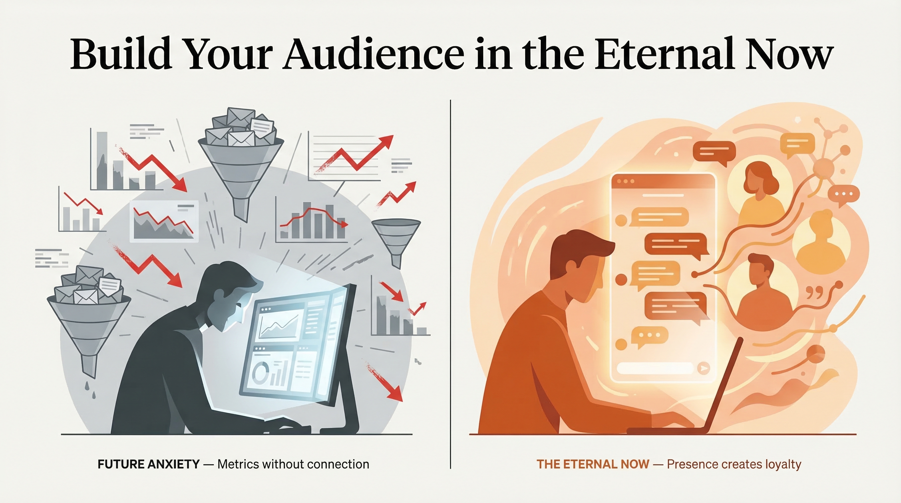

2026 Strategy Guide
Community & Audience Building
Stop Flying
the Plane.
Your Audience
Is Already Here.
The Default Mode Network is biologically wiring you to treat your audience as an abstraction. Here's the neuroscience of presence — and how to build irrational loyalty through the eternal now.

Gary Ricke
Founder & Digital Strategist ·
Quick Answer
Presence-based audience building is the practice of creating content and community from the eternal now — sensory-grounded, human-first communication that bypasses the brain's abstract rumination engine. Your Default Mode Network, optimized by years of delayed-return knowledge work, traps you in future simulations and metric obsession. The fix isn't a new tool. It's learning to meet your audience in the only moment that actually exists: right now.
3 brain conditions trap you in the future
3 pillars of non-dual community
3-second habit before every post
